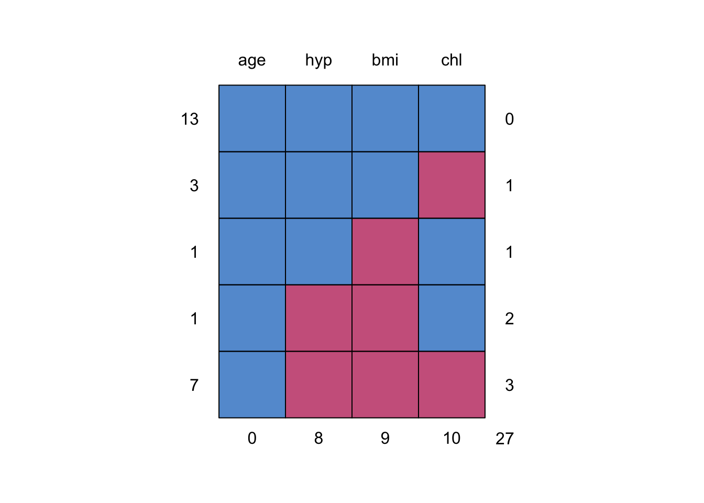

require(mice)
require(lattice)
set.seed(123)Ad hoc methods and mice
Vignette 1 of 10
This is the first vignette in a series of ten. It will give you an introduction to the R-package mice, an open-source tool for flexible imputation of incomplete data, developed by Stef van Buuren and Karin Groothuis-Oudshoorn (2011). Over the last decade, mice has become an important piece of imputation software, offering a very flexible environment for dealing with incomplete data. Moreover, the ability to integrate mice with other packages in R, and vice versa, offers many options for applied researchers.
The aim of this introduction is to enhance your understanding of multiple imputation, in general. You will learn how to multiply impute simple datasets and how to obtain the imputed data for further analysis. The main objective is to increase your knowledge and understanding on applications of multiple imputation.
No previous experience with R is required.
Working with mice
1. Open R and load the packages mice and lattice
If mice is not yet installed, run:
install.packages("mice")2. Inspect the incomplete data
The mice package contains several datasets. Once the package is loaded, these datasets can be used. Have a look at the nhanes dataset (Schafer, 1997, Table 6.14) by typing
nhanes age bmi hyp chl
1 1 NA NA NA
2 2 22.7 1 187
3 1 NA 1 187
4 3 NA NA NA
5 1 20.4 1 113
6 3 NA NA 184
7 1 22.5 1 118
8 1 30.1 1 187
9 2 22.0 1 238
10 2 NA NA NA
11 1 NA NA NA
12 2 NA NA NA
13 3 21.7 1 206
14 2 28.7 2 204
15 1 29.6 1 NA
16 1 NA NA NA
17 3 27.2 2 284
18 2 26.3 2 199
19 1 35.3 1 218
20 3 25.5 2 NA
21 1 NA NA NA
22 1 33.2 1 229
23 1 27.5 1 131
24 3 24.9 1 NA
25 2 27.4 1 186The nhanes dataset is a small data set with non-monotone missing values. It contains 25 observations on four variables: age group, body mass index, hypertension and cholesterol (mg/dL).
To learn more about the data, use one of the two following help commands:
help(nhanes)
?nhanes3. Get an overview of the data by the summary() command:
summary(nhanes) age bmi hyp chl
Min. :1.00 Min. :20.40 Min. :1.000 Min. :113.0
1st Qu.:1.00 1st Qu.:22.65 1st Qu.:1.000 1st Qu.:185.0
Median :2.00 Median :26.75 Median :1.000 Median :187.0
Mean :1.76 Mean :26.56 Mean :1.235 Mean :191.4
3rd Qu.:2.00 3rd Qu.:28.93 3rd Qu.:1.000 3rd Qu.:212.0
Max. :3.00 Max. :35.30 Max. :2.000 Max. :284.0
NA's :9 NA's :8 NA's :10 4. Inspect the missing data pattern
Check the missingness pattern for the nhanes dataset
md.pattern(nhanes)
age hyp bmi chl
13 1 1 1 1 0
3 1 1 1 0 1
1 1 1 0 1 1
1 1 0 0 1 2
7 1 0 0 0 3
0 8 9 10 27The missingness pattern shows that there are 27 missing values in total: 10 for chl , 9 for bmi and 8 for hyp. Moreover, there are thirteen completely observed rows, four rows with 1 missing, one row with 2 missings and seven rows with 3 missings. Looking at the missing data pattern is always useful (but may be difficult for datasets with many variables). It can give you an indication on how much information is missing and how the missingness is distributed.
Ad Hoc imputation methods
5. Form a regression model where age is predicted from bmi.
fit <- with(nhanes, lm(age ~ bmi))
summary(fit)
Call:
lm(formula = age ~ bmi)
Residuals:
Min 1Q Median 3Q Max
-1.2660 -0.5614 -0.1225 0.4660 1.2344
Coefficients:
Estimate Std. Error t value Pr(>|t|)
(Intercept) 3.76718 1.31945 2.855 0.0127 *
bmi -0.07359 0.04910 -1.499 0.1561
---
Signif. codes: 0 '***' 0.001 '**' 0.01 '*' 0.05 '.' 0.1 ' ' 1
Residual standard error: 0.8015 on 14 degrees of freedom
(9 observations deleted due to missingness)
Multiple R-squared: 0.1383, Adjusted R-squared: 0.07672
F-statistic: 2.246 on 1 and 14 DF, p-value: 0.15616. Impute the missing data in the nhanes dataset with mean imputation.
imp <- mice(nhanes, method = "mean", m = 1, maxit = 1)
iter imp variable
1 1 bmi hyp chlThe imputations are now done. As you can see, the algorithm ran for 1 iteration (maxit = 1) and presented us with only 1 imputation (m = 1) for each missing datum. This is correct, as substituting each missing data multiple times with the observed data mean would not make any sense (the inference would be equal, no matter which imputed dataset we would analyze). Likewise, more iterations would be computationally inefficient as the observed data mean does not change based on our imputations. We named the imputed object imp following the convention used in mice, but if you wish you can name it anything you’d like.
7. Explore the imputed data with the complete() function. What do you think the variable means are? What happened to the regression equation after imputation?
complete(imp) age bmi hyp chl
1 1 26.5625 1.235294 191.4
2 2 22.7000 1.000000 187.0
3 1 26.5625 1.000000 187.0
4 3 26.5625 1.235294 191.4
5 1 20.4000 1.000000 113.0
6 3 26.5625 1.235294 184.0
7 1 22.5000 1.000000 118.0
8 1 30.1000 1.000000 187.0
9 2 22.0000 1.000000 238.0
10 2 26.5625 1.235294 191.4
11 1 26.5625 1.235294 191.4
12 2 26.5625 1.235294 191.4
13 3 21.7000 1.000000 206.0
14 2 28.7000 2.000000 204.0
15 1 29.6000 1.000000 191.4
16 1 26.5625 1.235294 191.4
17 3 27.2000 2.000000 284.0
18 2 26.3000 2.000000 199.0
19 1 35.3000 1.000000 218.0
20 3 25.5000 2.000000 191.4
21 1 26.5625 1.235294 191.4
22 1 33.2000 1.000000 229.0
23 1 27.5000 1.000000 131.0
24 3 24.9000 1.000000 191.4
25 2 27.4000 1.000000 186.0We see the repetitive numbers 26.5625 for bmi, 1.2352594 for hyp, and 191.4 for chl. These can be confirmed as the means of the respective variables (columns):
colMeans(nhanes, na.rm = TRUE) age bmi hyp chl
1.760000 26.562500 1.235294 191.400000 We saw during the inspection of the missing data pattern that variable age has no missings. Therefore nothing is imputed for age because we would not want to alter the observed (and bonafide) values.
To inspect the regression model with the imputed data, run:
fit <- with(imp, lm(age ~ bmi))
summary(fit)# A tibble: 2 × 7
term estimate std.error statistic p.value nobs df.residual
<chr> <dbl> <dbl> <dbl> <dbl> <int> <dbl>
1 (Intercept) 3.71 1.33 2.80 0.0103 25 23
2 bmi -0.0736 0.0497 -1.48 0.152 25 23It is clear that nothing changed, but then again this is not surprising as variable bmi is somewhat normally distributed and we are just adding weight to the mean.
densityplot(nhanes$bmi)8. Impute the missing data in the nhanes dataset with regression imputation.
imp <- mice(nhanes, method = "norm.predict", m = 1, maxit = 1)
iter imp variable
1 1 bmi hyp chlThe imputations are now done. This code imputes the missing values in the data set by the regression imputation method. The argument method = "norm.predict" first fits a regression model for each observed value, based on the corresponding values in other variables and then imputes the missing values with the predicted values.
9. Again, inspect the completed data and investigate the imputed data regression model.
complete(imp) age bmi hyp chl
1 1 28.36021 1.0474831 172.4557
2 2 22.70000 1.0000000 187.0000
3 1 28.36021 1.0000000 187.0000
4 3 22.80609 1.5088506 222.7836
5 1 20.40000 1.0000000 113.0000
6 3 22.68531 1.5019433 184.0000
7 1 22.50000 1.0000000 118.0000
8 1 30.10000 1.0000000 187.0000
9 2 22.00000 1.0000000 238.0000
10 2 27.04536 1.3053438 208.0862
11 1 29.82242 1.0746600 182.9223
12 2 25.46237 1.2712595 196.7785
13 3 21.70000 1.0000000 206.0000
14 2 28.70000 2.0000000 204.0000
15 1 29.60000 1.0000000 181.6849
16 1 25.58231 0.8886142 153.1107
17 3 27.20000 2.0000000 284.0000
18 2 26.30000 2.0000000 199.0000
19 1 35.30000 1.0000000 218.0000
20 3 25.50000 2.0000000 239.8485
21 1 28.31995 1.0451807 172.1753
22 1 33.20000 1.0000000 229.0000
23 1 27.50000 1.0000000 131.0000
24 3 24.90000 1.0000000 240.5268
25 2 27.40000 1.0000000 186.0000The repetitive numbering is gone. We have now obtained a more natural looking set of imputations: instead of filling in the same bmi for all ages, we now take age (as well as hyp and chl) into account when imputing bmi.
To inspect the regression model with the imputed data, run:
fit <- with(imp, lm(age ~ bmi))
summary(fit)# A tibble: 2 × 7
term estimate std.error statistic p.value nobs df.residual
<chr> <dbl> <dbl> <dbl> <dbl> <int> <dbl>
1 (Intercept) 4.68 1.12 4.20 0.000345 25 23
2 bmi -0.110 0.0417 -2.64 0.0146 25 23It is clear that something has changed. In fact, we extrapolated (part of) the regression model for the observed data to missing data in bmi. In other words; the relation (read: information) gets stronger and we’ve obtained more observations.
10. Impute the missing data in the nhanes dataset with stochastic regression imputation.
imp <- mice(nhanes, method = "norm.nob", m = 1, maxit = 1)
iter imp variable
1 1 bmi hyp chlThe imputations are now done. This code imputes the missing values in the data set by the stochastic regression imputation method. The function does not incorporate the variability of the regression weights, so it is not ‘proper’ in the sense of Rubin (1987). For small samples, the variability of the imputed data will be underestimated.
11. Again, inspect the completed data and investigate the imputed data regression model.
complete(imp) age bmi hyp chl
1 1 33.61471 1.0064774 200.0025
2 2 22.70000 1.0000000 187.0000
3 1 32.36556 1.0000000 187.0000
4 3 29.94711 1.2555111 291.6824
5 1 20.40000 1.0000000 113.0000
6 3 20.02676 1.5286735 184.0000
7 1 22.50000 1.0000000 118.0000
8 1 30.10000 1.0000000 187.0000
9 2 22.00000 1.0000000 238.0000
10 2 20.09440 0.9498627 192.3497
11 1 32.65078 1.1459837 211.3078
12 2 20.12858 1.3255888 148.9863
13 3 21.70000 1.0000000 206.0000
14 2 28.70000 2.0000000 204.0000
15 1 29.60000 1.0000000 210.7834
16 1 26.85249 0.7870282 187.5259
17 3 27.20000 2.0000000 284.0000
18 2 26.30000 2.0000000 199.0000
19 1 35.30000 1.0000000 218.0000
20 3 25.50000 2.0000000 261.4307
21 1 36.35340 1.4367806 230.8058
22 1 33.20000 1.0000000 229.0000
23 1 27.50000 1.0000000 131.0000
24 3 24.90000 1.0000000 228.5297
25 2 27.40000 1.0000000 186.0000We have once more obtained a more natural looking set of imputations, where instead of filling in the same bmi for all ages, we now take age (as well as hyp and chl) into account when imputing bmi. We also add a random error to allow for our imputations to be off the regression line.
To inspect the regression model with the imputed data, run:
fit <- with(imp, lm(age ~ bmi))
summary(fit)# A tibble: 2 × 7
term estimate std.error statistic p.value nobs df.residual
<chr> <dbl> <dbl> <dbl> <dbl> <int> <dbl>
1 (Intercept) 3.91 0.826 4.73 0.0000907 25 23
2 bmi -0.0793 0.0300 -2.64 0.0145 25 2312. Re-run the stochastic imputation model with seed 123 and verify if your results are the same as the ones below
# A tibble: 2 × 7
term estimate std.error statistic p.value nobs df.residual
<chr> <dbl> <dbl> <dbl> <dbl> <int> <dbl>
1 (Intercept) 3.75 0.736 5.10 0.0000362 25 23
2 bmi -0.0792 0.0287 -2.77 0.0110 25 23The imputation procedure uses random sampling, and therefore, the results will be (perhaps slightly) different if we repeat the imputations. In order to get exactly the same result, you can use the seed argument
imp <- mice(nhanes, method = "norm.nob", m = 1, maxit = 1, seed = 123)
fit <- with(imp, lm(age ~ bmi))
summary(fit)where 123 is some arbitrary number that you can choose yourself. Re-running this command will always yields the same imputed values. The ability to replicate one’s findings exactly is considered essential in today’s reproducible science.
Multiple imputation
13. Let us impute the missing data in the nhanes dataset
imp <- mice(nhanes)
iter imp variable
1 1 bmi hyp chl
1 2 bmi hyp chl
1 3 bmi hyp chl
1 4 bmi hyp chl
1 5 bmi hyp chl
2 1 bmi hyp chl
2 2 bmi hyp chl
2 3 bmi hyp chl
2 4 bmi hyp chl
2 5 bmi hyp chl
3 1 bmi hyp chl
3 2 bmi hyp chl
3 3 bmi hyp chl
3 4 bmi hyp chl
3 5 bmi hyp chl
4 1 bmi hyp chl
4 2 bmi hyp chl
4 3 bmi hyp chl
4 4 bmi hyp chl
4 5 bmi hyp chl
5 1 bmi hyp chl
5 2 bmi hyp chl
5 3 bmi hyp chl
5 4 bmi hyp chl
5 5 bmi hyp chlimpClass: mids
Number of multiple imputations: 5
Imputation methods:
age bmi hyp chl
"" "pmm" "pmm" "pmm"
PredictorMatrix:
age bmi hyp chl
age 0 1 1 1
bmi 1 0 1 1
hyp 1 1 0 1
chl 1 1 1 0The imputations are now done. As you can see, the algorithm ran for 5 iterations (the default) and presented us with 5 imputations for each missing datum. For the rest of this document we will omit printing of the iteration cycle when we run mice. We do so by adding print=F to the mice call.
The object imp contains a multiply imputed data set (of class mids). It encapsulates all information from imputing the nhanes dataset, such as the original data, the imputed values, the number of missing values, number of iterations, and so on.
To obtain an overview of the information stored in the object imp, use the attributes() function:
attributes(imp)$names
[1] "data" "imp" "m" "where"
[5] "blocks" "call" "nmis" "method"
[9] "predictorMatrix" "visitSequence" "formulas" "post"
[13] "blots" "ignore" "seed" "iteration"
[17] "lastSeedValue" "chainMean" "chainVar" "loggedEvents"
[21] "version" "date"
$class
[1] "mids"For example, the original data are stored as
imp$data age bmi hyp chl
1 1 NA NA NA
2 2 22.7 1 187
3 1 NA 1 187
4 3 NA NA NA
5 1 20.4 1 113
6 3 NA NA 184
7 1 22.5 1 118
8 1 30.1 1 187
9 2 22.0 1 238
10 2 NA NA NA
11 1 NA NA NA
12 2 NA NA NA
13 3 21.7 1 206
14 2 28.7 2 204
15 1 29.6 1 NA
16 1 NA NA NA
17 3 27.2 2 284
18 2 26.3 2 199
19 1 35.3 1 218
20 3 25.5 2 NA
21 1 NA NA NA
22 1 33.2 1 229
23 1 27.5 1 131
24 3 24.9 1 NA
25 2 27.4 1 186and the imputations are stored as
imp$imp$age
[1] 1 2 3 4 5
<0 rows> (or 0-length row.names)
$bmi
1 2 3 4 5
1 24.9 25.5 27.4 22.0 28.7
3 28.7 22.0 29.6 28.7 22.0
4 27.4 29.6 20.4 25.5 20.4
6 25.5 21.7 24.9 20.4 27.4
10 21.7 20.4 27.4 27.5 28.7
11 22.5 33.2 22.0 33.2 35.3
12 27.2 27.5 27.5 27.2 22.5
16 30.1 22.5 27.5 30.1 27.2
21 30.1 30.1 28.7 28.7 22.0
$hyp
1 2 3 4 5
1 1 1 1 1 1
4 2 1 2 1 1
6 2 2 2 2 2
10 2 1 1 1 1
11 1 1 1 1 1
12 1 2 1 2 1
16 1 1 1 1 1
21 1 1 1 1 1
$chl
1 2 3 4 5
1 187 238 187 131 187
4 206 218 187 186 204
10 187 113 229 186 206
11 113 206 187 229 229
12 206 184 206 218 199
15 229 184 238 187 187
16 187 238 187 184 238
20 186 206 184 284 229
21 199 229 238 187 238
24 184 284 186 204 20614. Extract the completed data
By default, mice() calculates five (m = 5) imputed data sets. In order to get the third imputed data set, use the complete() function
c3 <- complete(imp, 3)
md.pattern(c3) /\ /\
{ `---' }
{ O O }
==> V <== No need for mice. This data set is completely observed.
\ \|/ /
`-----' age bmi hyp chl
25 1 1 1 1 0
0 0 0 0 0The collection of the \(m\) imputed data sets can be exported by function complete() in long, broad and repeated formats. For example,
c.long <- complete(imp, "long")
c.long age bmi hyp chl .imp .id
1 1 24.9 1 187 1 1
2 2 22.7 1 187 1 2
3 1 28.7 1 187 1 3
4 3 27.4 2 206 1 4
5 1 20.4 1 113 1 5
6 3 25.5 2 184 1 6
7 1 22.5 1 118 1 7
8 1 30.1 1 187 1 8
9 2 22.0 1 238 1 9
10 2 21.7 2 187 1 10
11 1 22.5 1 113 1 11
12 2 27.2 1 206 1 12
13 3 21.7 1 206 1 13
14 2 28.7 2 204 1 14
15 1 29.6 1 229 1 15
16 1 30.1 1 187 1 16
17 3 27.2 2 284 1 17
18 2 26.3 2 199 1 18
19 1 35.3 1 218 1 19
20 3 25.5 2 186 1 20
21 1 30.1 1 199 1 21
22 1 33.2 1 229 1 22
23 1 27.5 1 131 1 23
24 3 24.9 1 184 1 24
25 2 27.4 1 186 1 25
26 1 25.5 1 238 2 1
27 2 22.7 1 187 2 2
28 1 22.0 1 187 2 3
29 3 29.6 1 218 2 4
30 1 20.4 1 113 2 5
31 3 21.7 2 184 2 6
32 1 22.5 1 118 2 7
33 1 30.1 1 187 2 8
34 2 22.0 1 238 2 9
35 2 20.4 1 113 2 10
36 1 33.2 1 206 2 11
37 2 27.5 2 184 2 12
38 3 21.7 1 206 2 13
39 2 28.7 2 204 2 14
40 1 29.6 1 184 2 15
41 1 22.5 1 238 2 16
42 3 27.2 2 284 2 17
43 2 26.3 2 199 2 18
44 1 35.3 1 218 2 19
45 3 25.5 2 206 2 20
46 1 30.1 1 229 2 21
47 1 33.2 1 229 2 22
48 1 27.5 1 131 2 23
49 3 24.9 1 284 2 24
50 2 27.4 1 186 2 25
51 1 27.4 1 187 3 1
52 2 22.7 1 187 3 2
53 1 29.6 1 187 3 3
54 3 20.4 2 187 3 4
55 1 20.4 1 113 3 5
56 3 24.9 2 184 3 6
57 1 22.5 1 118 3 7
58 1 30.1 1 187 3 8
59 2 22.0 1 238 3 9
60 2 27.4 1 229 3 10
61 1 22.0 1 187 3 11
62 2 27.5 1 206 3 12
63 3 21.7 1 206 3 13
64 2 28.7 2 204 3 14
65 1 29.6 1 238 3 15
66 1 27.5 1 187 3 16
67 3 27.2 2 284 3 17
68 2 26.3 2 199 3 18
69 1 35.3 1 218 3 19
70 3 25.5 2 184 3 20
71 1 28.7 1 238 3 21
72 1 33.2 1 229 3 22
73 1 27.5 1 131 3 23
74 3 24.9 1 186 3 24
75 2 27.4 1 186 3 25
76 1 22.0 1 131 4 1
77 2 22.7 1 187 4 2
78 1 28.7 1 187 4 3
79 3 25.5 1 186 4 4
80 1 20.4 1 113 4 5
81 3 20.4 2 184 4 6
82 1 22.5 1 118 4 7
83 1 30.1 1 187 4 8
84 2 22.0 1 238 4 9
85 2 27.5 1 186 4 10
86 1 33.2 1 229 4 11
87 2 27.2 2 218 4 12
88 3 21.7 1 206 4 13
89 2 28.7 2 204 4 14
90 1 29.6 1 187 4 15
91 1 30.1 1 184 4 16
92 3 27.2 2 284 4 17
93 2 26.3 2 199 4 18
94 1 35.3 1 218 4 19
95 3 25.5 2 284 4 20
96 1 28.7 1 187 4 21
97 1 33.2 1 229 4 22
98 1 27.5 1 131 4 23
99 3 24.9 1 204 4 24
100 2 27.4 1 186 4 25
101 1 28.7 1 187 5 1
102 2 22.7 1 187 5 2
103 1 22.0 1 187 5 3
104 3 20.4 1 204 5 4
105 1 20.4 1 113 5 5
106 3 27.4 2 184 5 6
107 1 22.5 1 118 5 7
108 1 30.1 1 187 5 8
109 2 22.0 1 238 5 9
110 2 28.7 1 206 5 10
111 1 35.3 1 229 5 11
112 2 22.5 1 199 5 12
113 3 21.7 1 206 5 13
114 2 28.7 2 204 5 14
115 1 29.6 1 187 5 15
116 1 27.2 1 238 5 16
117 3 27.2 2 284 5 17
118 2 26.3 2 199 5 18
119 1 35.3 1 218 5 19
120 3 25.5 2 229 5 20
121 1 22.0 1 238 5 21
122 1 33.2 1 229 5 22
123 1 27.5 1 131 5 23
124 3 24.9 1 206 5 24
125 2 27.4 1 186 5 25and
c.broad <- complete(imp, "broad")New names:
• `age` -> `age...1`
• `bmi` -> `bmi...2`
• `hyp` -> `hyp...3`
• `chl` -> `chl...4`
• `age` -> `age...5`
• `bmi` -> `bmi...6`
• `hyp` -> `hyp...7`
• `chl` -> `chl...8`
• `age` -> `age...9`
• `bmi` -> `bmi...10`
• `hyp` -> `hyp...11`
• `chl` -> `chl...12`
• `age` -> `age...13`
• `bmi` -> `bmi...14`
• `hyp` -> `hyp...15`
• `chl` -> `chl...16`
• `age` -> `age...17`
• `bmi` -> `bmi...18`
• `hyp` -> `hyp...19`
• `chl` -> `chl...20`c.broad age.1 bmi.1 hyp.1 chl.1 age.2 bmi.2 hyp.2 chl.2 age.3 bmi.3 hyp.3 chl.3
1 1 24.9 1 187 1 25.5 1 238 1 27.4 1 187
2 2 22.7 1 187 2 22.7 1 187 2 22.7 1 187
3 1 28.7 1 187 1 22.0 1 187 1 29.6 1 187
4 3 27.4 2 206 3 29.6 1 218 3 20.4 2 187
5 1 20.4 1 113 1 20.4 1 113 1 20.4 1 113
6 3 25.5 2 184 3 21.7 2 184 3 24.9 2 184
7 1 22.5 1 118 1 22.5 1 118 1 22.5 1 118
8 1 30.1 1 187 1 30.1 1 187 1 30.1 1 187
9 2 22.0 1 238 2 22.0 1 238 2 22.0 1 238
10 2 21.7 2 187 2 20.4 1 113 2 27.4 1 229
11 1 22.5 1 113 1 33.2 1 206 1 22.0 1 187
12 2 27.2 1 206 2 27.5 2 184 2 27.5 1 206
13 3 21.7 1 206 3 21.7 1 206 3 21.7 1 206
14 2 28.7 2 204 2 28.7 2 204 2 28.7 2 204
15 1 29.6 1 229 1 29.6 1 184 1 29.6 1 238
16 1 30.1 1 187 1 22.5 1 238 1 27.5 1 187
17 3 27.2 2 284 3 27.2 2 284 3 27.2 2 284
18 2 26.3 2 199 2 26.3 2 199 2 26.3 2 199
19 1 35.3 1 218 1 35.3 1 218 1 35.3 1 218
20 3 25.5 2 186 3 25.5 2 206 3 25.5 2 184
21 1 30.1 1 199 1 30.1 1 229 1 28.7 1 238
22 1 33.2 1 229 1 33.2 1 229 1 33.2 1 229
23 1 27.5 1 131 1 27.5 1 131 1 27.5 1 131
24 3 24.9 1 184 3 24.9 1 284 3 24.9 1 186
25 2 27.4 1 186 2 27.4 1 186 2 27.4 1 186
age.4 bmi.4 hyp.4 chl.4 age.5 bmi.5 hyp.5 chl.5
1 1 22.0 1 131 1 28.7 1 187
2 2 22.7 1 187 2 22.7 1 187
3 1 28.7 1 187 1 22.0 1 187
4 3 25.5 1 186 3 20.4 1 204
5 1 20.4 1 113 1 20.4 1 113
6 3 20.4 2 184 3 27.4 2 184
7 1 22.5 1 118 1 22.5 1 118
8 1 30.1 1 187 1 30.1 1 187
9 2 22.0 1 238 2 22.0 1 238
10 2 27.5 1 186 2 28.7 1 206
11 1 33.2 1 229 1 35.3 1 229
12 2 27.2 2 218 2 22.5 1 199
13 3 21.7 1 206 3 21.7 1 206
14 2 28.7 2 204 2 28.7 2 204
15 1 29.6 1 187 1 29.6 1 187
16 1 30.1 1 184 1 27.2 1 238
17 3 27.2 2 284 3 27.2 2 284
18 2 26.3 2 199 2 26.3 2 199
19 1 35.3 1 218 1 35.3 1 218
20 3 25.5 2 284 3 25.5 2 229
21 1 28.7 1 187 1 22.0 1 238
22 1 33.2 1 229 1 33.2 1 229
23 1 27.5 1 131 1 27.5 1 131
24 3 24.9 1 204 3 24.9 1 206
25 2 27.4 1 186 2 27.4 1 186are completed data sets in long and broad format, respectively. See ?complete for more detail.
Conclusion
We have seen that (multiple) imputation is straightforward with mice. However, don’t let the simplicity of the software fool you into thinking that the problem itself is also straightforward. In the next vignette we will therefore explore how the mice package can flexibly provide us the tools to assess and control the imputation of missing data.
References
Rubin, D. B. Multiple imputation for nonresponse in surveys. John Wiley & Sons, 1987. Amazon
Schafer, J.L. (1997). Analysis of Incomplete Multivariate Data. London: Chapman & Hall. Table 6.14. Amazon
Van Buuren, S. and Groothuis-Oudshoorn, K. (2011). mice: Multivariate Imputation by Chained Equations in R. Journal of Statistical Software, 45(3), 1-67. pdf
- End of Vignette